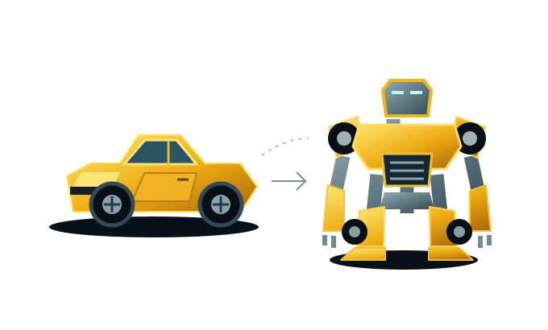

CAR → ROBOTA SMALL COLLECTION OF PLAYFUL THINGS
一些有意思的东西，
点开就能玩。✳
把脑海里的「如果……会怎样？」
变成可以亲手探索的小实验。
作品柜
每一个灵感，都有来处。下一件，会是什么？
小游戏、可视化、奇怪的小工具……给好奇心留一个位置。
A SMALL COLLECTION OF PLAYFUL THINGS
把脑海里的「如果……会怎样？」
变成可以亲手探索的小实验。
小游戏、可视化、奇怪的小工具……给好奇心留一个位置。